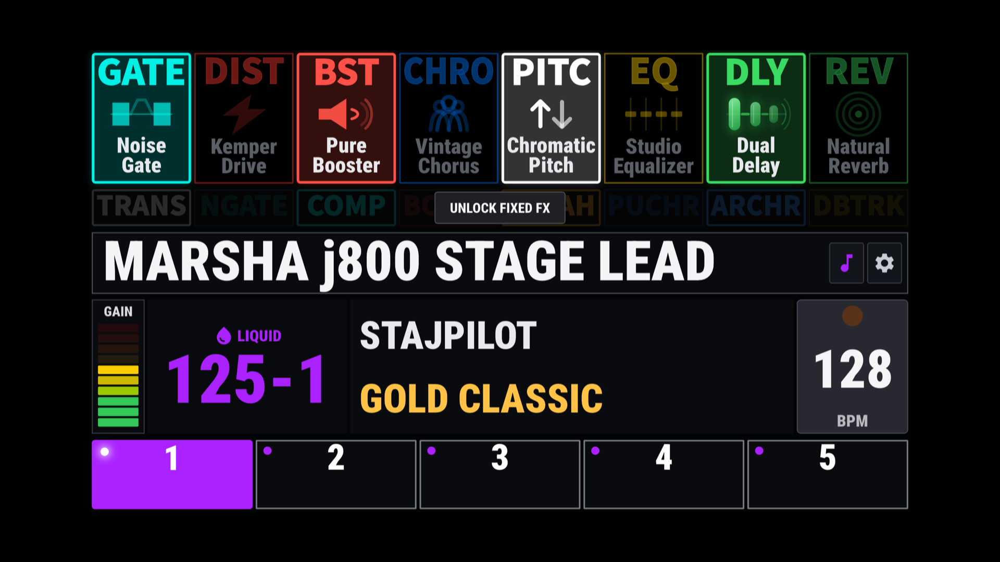
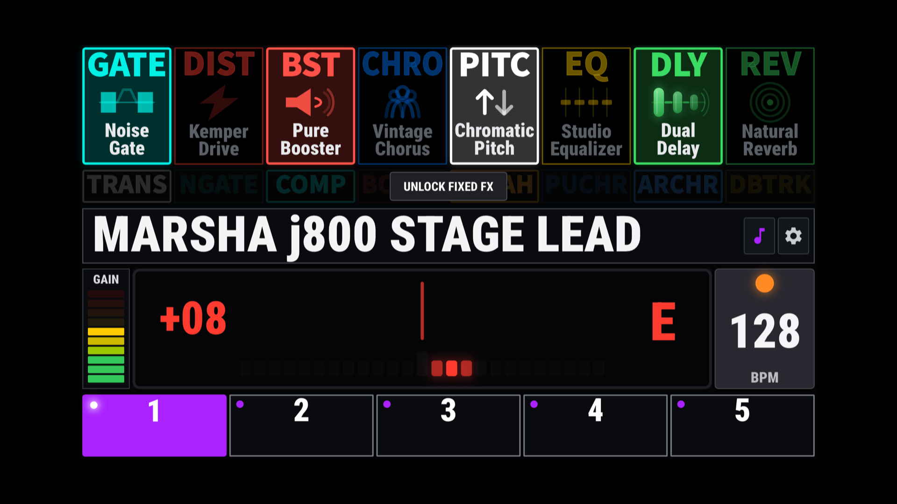
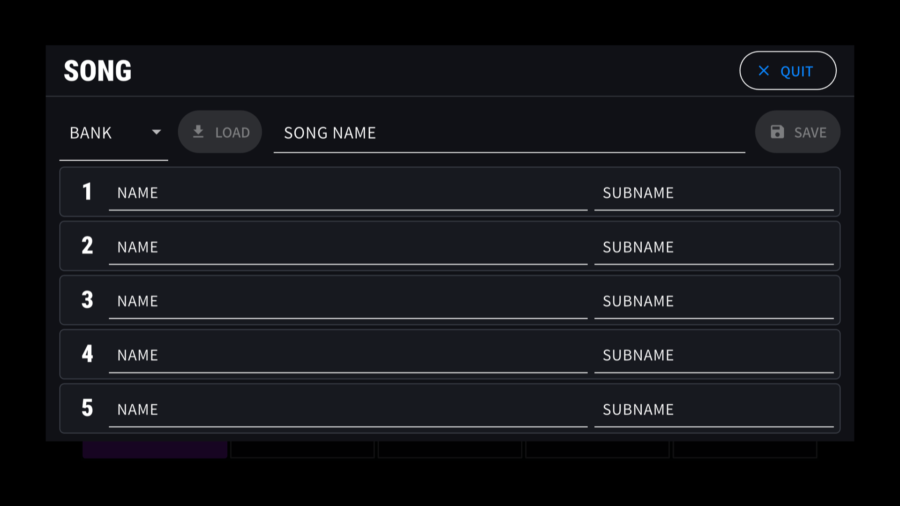

Android / Phones & tablets
StajPilot for Android
A stage-ready MIDI controller and performance display for the KEMPER PROFILER Player, with Bluetooth MIDI pedal support.
Paid beta / Early access: US$14.99. More than 20 participants are already taking part. Contact us via Instagram DM for details.

- USB MIDI
- Bluetooth MIDI pedals
- No account
- No subscription
On stage
See your rig. Stay in control.
Effects, with their actual names
See detailed effect names and the live on/off status of eight rig FX blocks. Touch a block to control it. Fixed FX have their own status display and controls, with Touch and Always modes.
Rigs and performance controls
Five slot controls, bank navigation, rig names, author and amplifier names, and gain information. Use Tap Tempo or enter a BPM value directly. Pedal Morph display keeps the current pedal position visible.
Needle & Strobe tuners
Choose the tuner display that suits you. Open it by double-tapping the rig-name area.
Your own Song Mode
A StajPilot feature for organizing custom song, slot and sub names across up to 125 banks and five slots per bank. Your setup stays on your device and is retained through normal app updates. Deleting the app may remove that data.


Streaming first
Most display information uses real-time MIDI streaming, and many supported controls use two-way MIDI communication. StajPilot does not use continuous millisecond-interval polling to imitate real-time streaming. Features that require periodic polling remain disabled by default and are enabled only when needed, avoiding unnecessary load on the Player.
Explore without hardware. Tap DEMO at the bottom-right of the waiting screen. Demo Mode does not send MIDI commands.
Paid closed testing
Try Android before the public release.
The Android version is currently in paid closed testing, not general public release. If you would like to try it sooner, you can join the paid beta. The price is US$14.99, quoted in U.S. dollars. Contact us via Instagram DM for participation details.
Contact via Instagram DMVisit our YouTube channel: youtube.com/@StajD
Android Bluetooth MIDI
Keep your hands on the guitar.
Use supported Bluetooth MIDI foot controllers alongside the USB-connected Player. Currently tested with M-VAVE Chocolate.
Pair in Android first
Power on the pedal and pair it in Android's system Bluetooth settings. StajPilot uses supported controllers already paired with the operating system.
Allow Bluetooth access
Grant Bluetooth or Nearby Devices permission when requested. Open the Bluetooth Pedal section in StajPilot's settings and refresh the paired-device list if needed.
Check the pedal connection
Confirm the pedal is connected in the app before using its MIDI controls. Pair each pedal separately when using more than one. The main screen shows the connected-pedal count.
Bluetooth device information and MIDI data are not sent to an external server. Location data is not collected or stored. Read the privacy policy.
Getting started
Connect to the Player over USB.
Your Android phone or tablet acts as the USB Host. The Player connects through its USB-B port.
Power on the Player
Make sure your KEMPER PROFILER Player is powered on.
Connect a data-capable cable
Use a suitable USB OTG/host adapter and USB data cable to connect to the Player's USB-B port. Charge-only cables will not work.
Allow access and open StajPilot
If Android asks for USB access, select StajPilot and allow it. The waiting screen changes to the controller once MIDI communication begins.
Connection help
Check the connection, then the controls.
The Player is not recognized
Confirm your Android device supports USB Host/OTG mode, the Player is powered on, and the connection is to its USB-B port. Try a different data cable and compatible OTG adapter. Android's USB settings and permission prompts vary by manufacturer.
USB mode changes after reconnecting
Use a compatible OTG/host adapter to help establish the correct USB role. For the direct Player connection, the Android device needs to be the host. Do not assume that every setting labeled MIDI selects that role.
A paired pedal does not respond
Confirm the pedal is paired in Android's Bluetooth settings, Bluetooth is on, and the app has the required permission. Check the Bluetooth Pedal section in StajPilot and refresh the paired-device list. Being paired is not the same as having an active MIDI connection.
The tablet switches screens when a pedal powers off
For FootCtrlPlus/Chocolate Plus, turn Input device off in that pedal's Android Bluetooth settings and leave it paired. Repeat for every pedal. See the Bluetooth setup notes above.
Using multiple pedals or reconnecting a pedal
Pair each supported pedal separately in Android. Keep saved pedals paired when turning them off. Once powered on again, check the app's connected status; refresh the list if necessary. Do not use Forget simply to power a pedal down.
Some rig or effect information is missing
Check the USB connection, connector fit and device power. Try another cable/adapter combination, and record which information is missing. A detected USB device alone does not confirm complete MIDI reception.
Still need a hand?
Send your Android device model and OS version, Player firmware, cable/adapter details, pedal model if applicable, and the steps that reproduce the issue.
StajPilot is an independent third-party application and is not affiliated with or endorsed by Kemper GmbH.
Compatibility and proper operation with the KEMPER PROFILER Player are not guaranteed. Changes to device hardware, firmware, communication protocols, or operating systems may affect, limit, or discontinue some or all functionality.
KEMPER and PROFILER are trademarks of Kemper GmbH. All other trademarks belong to their respective owners.